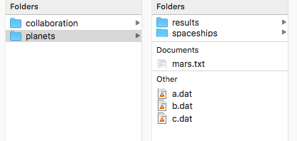

Git Reference
Contents
Git Reference#
Push changes to a remote repository: quick steps
Initialize a local repository on your computer
Set up a remote repository on GitHub
Delete a local git repository on your computer
Push changes to a remote repository: quick steps#
If you have already initialized a local repository on your computer and set up a remote repository on GitHub, running the three commands below in your local project directory will add all new files and changes and push them to GitHub.
git add .
git commit -m "Write a descriptive commit message here."
git push origin master
Note that git add . adds all files in the working directory and subdirectory to the repository. You can also add specific files.
git add file1.txt file2.txt file3.txt
Replace the commit message between the quotes with a brief description of the changes that you have made.
Ignoring and removing files from your repository#
Ignoring files
Create a text file called .gitignore and place it in the main directory of your project. The contents of the file should contain a list of files (or file patterns) that are on your computer, but do not want to share with others (e.g. .DS_Store,Thumbs.db,*.pyc).
For more information: https://www.atlassian.com/git/tutorials/gitignore
Removing files from your repository without removing them from your computer
git rm --cached file1.txt file2.txt file3.txt
Initialize a local repository on your computer#
Run the following command in your local project directory:
git init
You only have to do this once for each project. You do not have to run this command in sub-directories.
Set up a remote repository on GitHub#
Go to your GitHub account page
Click the green “New” button
Enter a name for the repository and select whether the repository will be public or private
In the project directory on your local computer, run the following command:
git remote add origin https://github.com/user-name/repository-name.git
Replace the address above with the address of the remote repository you created on GitHub.
If you have not done so already, initialize a local repository on your computer
Follow the quick steps to push changes to a remote repository
You only have to do this once for each project.
Delete a local git repository on your computer#
Sometimes you may want to delete a local git repository that you have already created with git init. You want to keep the files, but undo everything that has been done with git. This situation might arise if you make a mistake, like initializing in the wrong directory. Deleting the repository allows you to start over.
There is no special command for deleting a local repository. Instead, you need to delete the hidden .git directory that was created when you ran git init. This is where git stores all files related to your project.
Deleting the .git directory can be done on the command line. However, the instructions here demonstrate how to do this in the file browser because there is less chance of making a catastrophic error. The directions depend on the operating system (scroll down for Windows).
Mac#
In the Finder, navigate to your main project directory (the one where you ran git init).

To show the hidden files, type command + Shift + .

Delete the .git directory.

Your local git repository has been deleted. You can now start over and initialize a new repository
Windows#
Open File Explorer from the taskbar. Navigate to your main project directory (the one where you ran
git init).Select View > Options > Change folder and search options.
Select the View tab and, in Advanced settings, select Show hidden files, folders, and drives and OK.
Delete the
.gitdirectory. Your local git repository has been deleted. You can now start over and initialize a new repository
Source for instructions on viewing hidden files and folders: Microsoft support